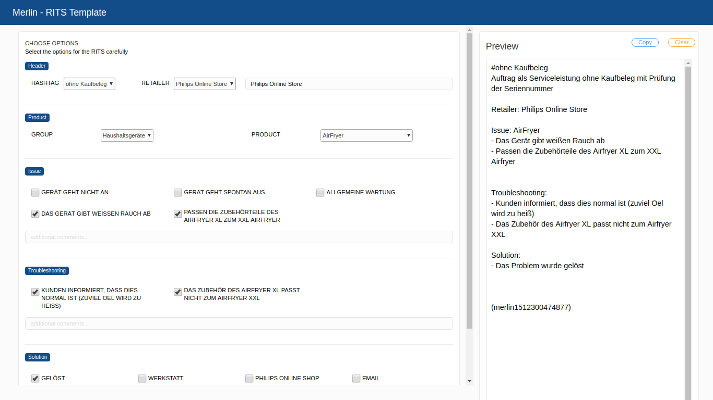

Merlin - RITS Wizard
A overview about the Tool
The Merlin RITS Wizard is supporting you to write correct Salesforce entries and by the way it shows you some helpful Tips & Tricks for troubleshooting.
Here you see a filled case which is producing a RITS for a Airfryer.
